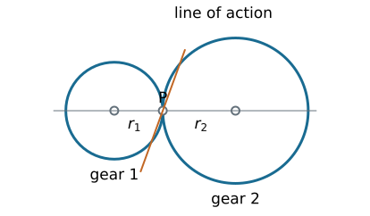
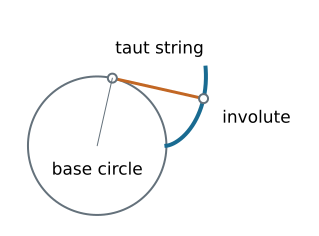
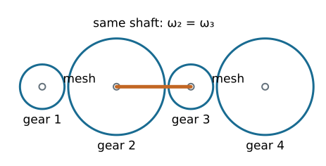
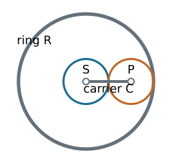

Gear Trains
Kinematics and Machine Dynamics · Chapter 12
Chapter overview
- Rolling contact, conjugate tooth profiles, and involutes
- Pressure angle, tooth dimensions, backlash, and interference
- Gear types, belts, and chains
- Simple, compound, reverted, and planetary trains
Rolling cylinders

No slip at P requires r_1\omega_1+r_2\omega_2=0 for an external pair.
\frac{\omega_2}{\omega_1}=-\frac{r_1}{r_2}.
From cylinders to teeth
Smooth cylinders transmit tangential force through friction. Required traction must remain within the available friction limit.
Gear teeth provide positive engagement and preserve shaft phasing.
The original rolling circles become the pitch circles. The smaller member is the pinion.
Teeth must do more than prevent slip: their geometry determines whether the velocity ratio stays constant.
Fundamental law of gearing
At every contact point, the common normal to the tooth profiles must pass through a fixed pitch point P on the line of centers.
This gives a constant angular velocity ratio set by O_1P/O_2P.
Profiles satisfying this condition are conjugate.
An involute tooth profile satisfies the law over its usable contact interval.
Generating an involute

Unwrap a taut string from a base circle. The end traces an involute; the string is normal to that curve.
Involute equations
For base radius r_b and unwinding parameter u\geq0:
x=r_b(\cos u+u\sin u), y=r_b(\sin u-u\cos u).
The distance to the center is r=r_b\sqrt{1+u^2}\geq r_b.
The involute exists outside the base circle. The tooth root below it needs a different connecting profile.
Pressure angle and line of action
The pressure angle \phi is measured between the common normal and the pitch-circle tangent.
For a spur-gear pair at its reference center distance:
r_b=r\cos\phi.
Resolve the normal contact force F_n:
F_t=F_n\cos\phi,\qquad F_r=F_n\sin\phi=F_t\tan\phi.
The tangential component supplies torque; the radial component loads the bearings.
Center distance can change
For an external involute pair with fixed base radii and operating center distance C:
\boxed{\cos\phi_w=\frac{r_{b1}+r_{b2}}{C}.}
Increasing C increases the operating pressure angle \phi_w.
The tooth-count velocity ratio stays constant while usable conjugate contact is maintained. Backlash and contact ratio can still change.
Backlash
Backlash is the tooth-space clearance measured along the pitch circle. Reversing torque moves contact from one flank to the other.
For a small increase \Delta C in center distance,
\Delta j_t\approx2\Delta C\tan\phi.
The additional angular lost motion at radius r is approximately
\Delta\theta\approx\frac{\Delta j_t}{r}
in radians. This is a small-change estimate, not the total manufactured backlash.
Tooth dimensions
- Addendum: radial height above the reference pitch circle.
- Dedendum: radial depth below it.
- Root clearance: gap between a tooth tip and the mating root.
- Tooth thickness: arc thickness at the reference pitch circle.
- Face width: tooth extent along the gear axis.
Pitch, base, tip, and root circles are different geometric objects.
Pitch, module, and tooth count
With reference diameter d and tooth count N:
p_c=\frac{\pi d}{N},\qquad m=\frac{d}{N},\qquad p_c=\pi m.
The base pitch is p_b=p_c\cos\phi.
Diametral pitch uses P_d=N/d with d in inches:
m\ [\mathrm{mm}]=\frac{25.4}{P_d\ [\mathrm{in}^{-1}]}.
Mating standard spur gears need compatible module and reference pressure angle.
Worked example: selecting a pair
Choose N_1=20, N_2=60, m=2 mm, and \phi=20^\circ.
d_1=40\ \mathrm{mm},\quad d_2=120\ \mathrm{mm},\quad C=80\ \mathrm{mm}.
p_c=6.283\ \mathrm{mm},\qquad p_b=5.904\ \mathrm{mm}.
At n_1=1200 rpm, the external gear speed is n_2=-400 rpm.
The negative sign denotes opposite rotation when both shaft axes use the same positive direction.
Power and torque
For ideal steady transmission, input and output power magnitudes agree:
|T_{\mathrm{out}}\omega_{\mathrm{out}}|=|T_{\mathrm{in}}\omega_{\mathrm{in}}|.
With efficiency \eta in the specified driving direction:
\boxed{\frac{|T_{\mathrm{out}}|}{|T_{\mathrm{in}}|} =\eta\frac{|\omega_{\mathrm{in}}|}{|\omega_{\mathrm{out}}|}.}
For the 3:1 reduction with T_{\mathrm{in}}=10 N m and assumed \eta=0.95, delivered torque is 28.5 N m.
Interference and undercutting
Interference: a mating tip attempts contact outside the intended conjugate portion of the other tooth.
Undercutting: the generating cutter removes root material, which can weaken the tooth and shorten useful contact.
Small tooth counts are particularly susceptible. Remedies include more teeth, suitable profile shift, or a different tooth geometry.
A root below the base circle alone does not prove that the assembled gears interfere; inspect the actual contact path.
Contact ratio
For a standard external spur pair, with tip radii r_{a1},r_{a2}:
\epsilon_\alpha= \frac{\sqrt{r_{a1}^2-r_{b1}^2}+\sqrt{r_{a2}^2-r_{b2}^2}-C\sin\phi_w}{p_b}.
The numerator is the usable path of contact under the assumed noninterfering involute geometry.
A transverse contact ratio greater than one provides overlap between successive tooth pairs. Also check interference and manufacturing limits.
Spur and helical gears
| Type | Geometry and consequences |
|---|---|
| Spur | Straight teeth parallel to axis; parallel shafts; no ideal axial tooth force |
| Parallel helical | Gradual engagement; opposite hands with equal helix-angle magnitudes; axial thrust |
| Crossed helical | Nonparallel, nonintersecting shafts; substantial sliding; localized contact |
Helical gearing requires compatible normal tooth geometry and suitable thrust support.
Worms and worm wheels
A worm acts like a screw meshing with a worm wheel.
If the worm has z_w starts and the wheel has N teeth,
\left|\frac{\omega_{\mathrm{wheel}}}{\omega_{\mathrm{worm}}}\right|=\frac{z_w}{N}.
A two-start worm and 40-tooth wheel give a 20:1 reduction.
High sliding affects efficiency, heat, and lubrication. Not every worm drive is self-locking; backdrivability depends on lead angle and friction.
Bevel and hypoid gears
Bevel gears: intersecting shaft axes, with tooth geometry on pitch cones.
Hypoid gears: offset, nonintersecting axes; the offset introduces additional sliding.
Choose the gear family from the required shaft geometry, ratio, speed, load, and packaging. Tooth-count ratios do not replace stress or thermal design.
Belts and chains
| Drive | Main kinematic consideration |
|---|---|
| Smooth belt | Friction transmission; creep or slip can alter phasing |
| Timing belt | Teeth maintain nominal phase; compliance remains |
| Chain | Positive engagement; polygonal action produces speed variation |
An open belt or ordinary chain drive rotates shafts in the same sense. A crossed belt reverses the sense.
Belt curvature changes and chain engagement can excite vibration.
Simple gear trains
Only one gear is fixed to each shaft. For three external gears:
\frac{\omega_3}{\omega_1} =\left(-\frac{N_1}{N_2}\right)\left(-\frac{N_2}{N_3}\right) =\frac{N_1}{N_3}.
The intermediate idler changes spacing and the rotation sequence; its tooth count cancels from the overall ratio.
Count external meshes to determine the final sign.
Compound gear trains

Gears 2 and 3 are fixed to the same shaft, so \omega_2=\omega_3.
\boxed{\frac{\omega_4}{\omega_1}=\frac{N_1N_3}{N_2N_4}.}
Worked example: a compound reduction
Choose (N_1,N_2,N_3,N_4)=(20,60,24,72).
\frac{\omega_4}{\omega_1}=\frac{20}{60}\frac{24}{72}=\frac19.
At 1800 rpm input, output is 200 rpm in the same sense.
With T_1=5 N m and each stage assumed 96% efficient,
|T_4|=(0.96)^2(9)(5)=41.47\ \mathrm{N\,m}.
Reverted trains
In a reverted compound train, input and output shafts are coaxial.
The two external mesh center distances must match:
m_{12}(N_1+N_2)=m_{34}(N_3+N_4).
For equal modules, tooth-count sums must agree.
Example: (20,60,20,60) gives equal sums of 80 and a 9:1 reduction. Check physical axial placement and clearances as well.
Planetary train: three accessible members

The sun S, ring R, and carrier C have concentric accessible shafts. The planet center moves with the carrier.
Tooth-count geometry
For a simple planetary set of common module:
r_R=r_S+2r_P,\qquad\boxed{N_R=N_S+2N_P.}
Example: N_S=30, N_P=30, and N_R=90.
One planet is enough for the kinematic relation. Multiple planets share load but add spacing, phasing, and manufacturing requirements.
Freeze the carrier mathematically
Observe the train in a frame rotating at \omega_C.
Sun-to-planet external mesh:
N_S(\omega_S-\omega_C)+N_P(\omega_P-\omega_C)=0.
Planet-to-ring internal mesh:
N_R(\omega_R-\omega_C)-N_P(\omega_P-\omega_C)=0.
Eliminate the planet speed to relate the three accessible members.
Willis relation
\boxed{N_S(\omega_S-\omega_C)+N_R(\omega_R-\omega_C)=0.}
Equivalently, when the denominator is nonzero,
\frac{\omega_S-\omega_C}{\omega_R-\omega_C}=-\frac{N_R}{N_S}.
There is one relation among three speeds: two independent inputs determine the third. Holding one member fixes one of those inputs to zero.
Worked example: ring held fixed
Use N_S=30, N_R=90, \omega_R=0, and n_S=1200 rpm.
30(1200-n_C)+90(0-n_C)=0.
\boxed{n_C=300\ \mathrm{rpm}.}
The reduction is 1+N_R/N_S=4; carrier and sun rotate in the same direction.
The fixed ring transmits reaction torque even though it transmits zero power.
Other planetary operating modes
For the same 30/90 tooth counts:
- Carrier fixed: \omega_R=-\omega_S/3.
- Sun fixed: \omega_C=3\omega_R/4.
- Sun and ring locked together: all members rotate together.
Ideal steady torque and power balances require
T_S+T_R+T_C=0,\qquad T_S\omega_S+T_R\omega_R+T_C\omega_C=0,
using signed external torques applied to the assembly.
Design checks
- Verify geometry and compatible tooth specifications.
- Derive the signed speed relation from every mesh.
- Identify fixed members and shared shafts.
- Apply power balance with stated efficiency assumptions.
- Check tooth strength, interference, backlash, bearings, and lubrication separately.
References and next chapter
Satici, Kinematics and Machine Dynamics, Chapter 12, §§12.1–12.8, pp. 89–101, following Norton, Design of Machinery.
Supplemental dimension reference: KHK, Calculation of Gear Dimensions.
Next: Chapter 13: Cams.

← Course Home · Kinematics and Machine Dynamics · Chapter 12